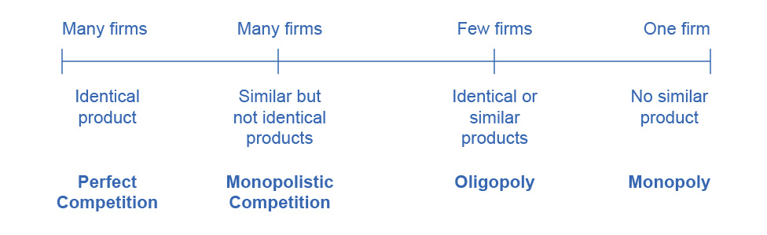
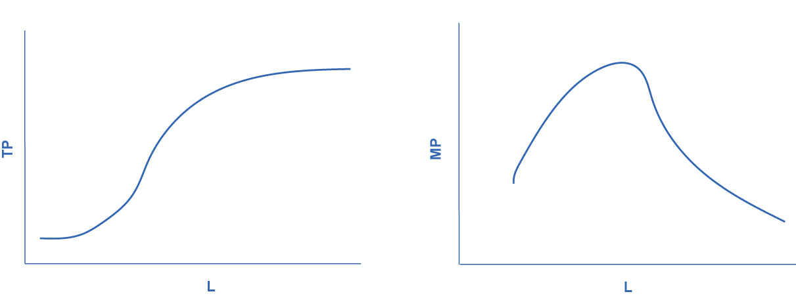
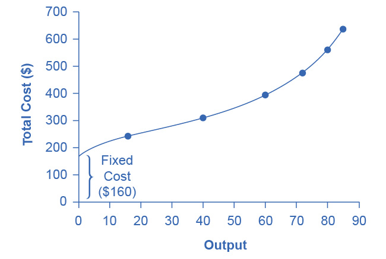
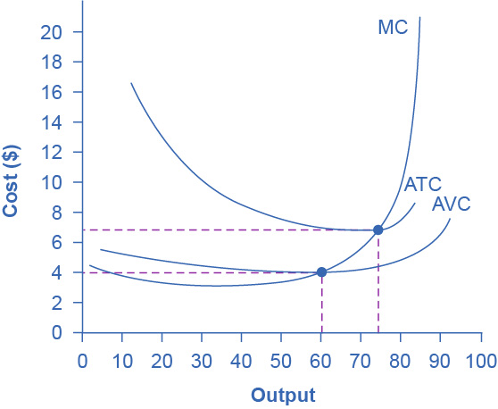

7. Production and Costs
Figure 7.1 Amazon is an American international electronic commerce company that sells books, among many other things, shipping them directly to the consumer. Until recently there were no brick and mortar Amazon stores. (Credit: modification of “Amazon Prime Delivery Van (50072389511)” by Tony Webster/Wikimedia Commons, CC BY 2.0)
Chapter Objectives
In this chapter, you will learn about:
- Explicit and Implicit Costs, and Accounting and Economic Profit
- Production in the Short Run
- Costs in the Short Run
- Production in the Long Run
- Costs in the Long Run
Introduction to Production, Costs, and Industry Structure
Bring It Home
Amazon
In less than two decades, Amazon.com has transformed the way consumers sell, buy, and even read. Prior to Amazon, independent bookstores with limited inventories in small retail locations primarily sold books. There were exceptions, of course. Borders and Barnes & Noble offered larger stores in urban areas. In the last decade, however, independent bookstores have mostly disappeared, Borders has gone out of business, and Barnes & Noble is struggling. Online delivery and purchase of books has overtaken the more traditional business models. How has Amazon changed the book selling industry? How has it managed to crush its competition?
A major reason for the giant retailer’s success is its production model and cost structure, which has enabled Amazon to undercut the competitors' prices even when factoring in the cost of shipping. Read on to see how firms great (like Amazon) and small (like your corner deli) determine what to sell, at what output, and price.
This chapter is the first of four chapters that explores the theory of the firm. This theory explains how firms behave. What does that mean? Let’s define what we mean by the firm. A firm (or producer or business) combines inputs of labor, capital, land, and raw or finished component materials to produce outputs. If the firm is successful, the outputs are more valuable than the inputs. This activity of production goes beyond manufacturing (i.e., making things). It includes any process or service that creates value, including transportation, distribution, wholesale and retail sales.
Production involves a number of important decisions that define a firm's behavior. These decisions include, but are not limited to:
- What product or products should the firm produce?
- How should the firm produce the products (i.e., what production process should the firm use)?
- How much output should the firm produce?
- What price should the firm charge for its products?
- How much labor should the firm employ?
The answers to these questions depend on the production and cost conditions facing each firm. That is the subject of this chapter. The answers also depend on the market structure for the product(s) in question. Market structure is a multidimensional concept that involves how competitive the industry is. We define it by questions such as these:
- How much market power does each firm in the industry possess?
- How similar is each firm’s product to the products of other firms in the industry?
- How difficult is it for new firms to enter the industry?
- Do firms compete on the basis of price, advertising, or other product differences?
Figure 7.2 illustrates the range of different market structures, which we will explore in ?sec-chapter-8, ?sec-chapter-9, and ?sec-chapter-10.

Figure 7.2 The Spectrum of Competition Firms face different competitive situations. At one extreme—perfect competition—many firms are all trying to sell identical products. At the other extreme—monopoly—only one firm is selling the product, and this firm faces no competition. Monopolistic competition and oligopoly fall between the extremes of perfect competition and monopoly. Monopolistic competition is a situation with many firms selling similar, but not identical products. Oligopoly is a situation with few firms that sell identical or similar products.
Let's examine how firms determine their costs and desired profit levels. Then we will discuss the origins of cost, both in the short and long run. Private enterprise, which can be private individual or group business ownership, characterizes the U.S. economy. In the U.S. system, we have the option to organize private businesses as sole proprietorships (one owner), partners (more than one owner), and corporations (legal entitles separate from the owners.
When people think of businesses, often corporate giants like Wal-Mart, Microsoft, or General Motors come to mind. However, firms come in all sizes, as Table 7.1 shows. The vast majority of American firms have fewer than 20 employees. As of 2010, the U.S. Census Bureau counted 5.7 million firms with employees in the U.S. economy. Slightly less than half of all the workers in private firms are at the 17,000 large firms, meaning they employ more than 500 workers. Another 35% of workers in the U.S. economy are at firms with fewer than 100 workers. These small-scale businesses include everything from dentists and lawyers to businesses that mow lawns or clean houses. Table 7.1 does not include a separate category for the millions of small “non-employer” businesses where a single owner or a few partners are not officially paid wages or a salary, but simply receive whatever they can earn.
| Number of Employees | Firms (% of total firms) | Number of Paid Employees (% of total employment) |
|---|---|---|
| Total | 5,734,538 | 112.0 million |
| 0–9 | 4,543,315 (79.2%) | 12.3 million (11.0%) |
| 10–19 | 617,089 (10.8%) | 8.3 million (7.4%) |
| 20–99 | 475,125 (8.3%) | 18.6 million (16.6%) |
| 100–499 | 81,773 (1.4%) | 15.9 million (14.2%) |
| 500 or more | 17,236 (0.30%) | 50.9 million (49.8%) |
7.1 Explicit and Implicit Costs, and Accounting and Economic Profit
Learning Objectives
By the end of this section, you will be able to:
- Explain the difference between explicit costs and implicit costs
- Understand the relationship between cost and revenue
Each business, regardless of size or complexity, tries to earn a profit:
\(\text{Profit} = \text{Total~Revenue\ –\ Total~Cost}\)
Total revenue is the income the firm generates from selling its products. We calculate it by multiplying the price of the product times the quantity of output sold:
\(\text{Total~Revenue} = \text{Price\ ×\ Quantity}\)
We will see in the following chapters that revenue is a function of the demand for the firm’s products.
Total cost is what the firm pays for producing and selling its products. Recall that production involves the firm converting inputs to outputs. Each of those inputs has a cost to the firm. The sum of all those costs is total cost. We will learn in this chapter that short run costs are different from long run costs.
We can distinguish between two types of cost: explicit and implicit. Explicit costs are out-of-pocket costs, that is, actual payments. Wages that a firm pays its employees or rent that a firm pays for its office are explicit costs. Implicit costs are more subtle, but just as important. They represent the opportunity cost of using resources that the firm already owns. Often for small businesses, they are resources that the owners contribute. For example, working in the business while not earning a formal salary, or using the ground floor of a home as a retail store are both implicit costs. Implicit costs also include the depreciation of goods, materials, and equipment that are necessary for a company to operate. (See the Work It Out feature for an extended example.)
These two definitions of cost are important for distinguishing between two conceptions of profit, accounting profit, and economic profit. Accounting profit is a cash concept. It means total revenue minus explicit costs—the difference between dollars brought in and dollars paid out. Economic profit is total revenue minus total cost, including both explicit and implicit costs. The difference is important because even though a business pays income taxes based on its accounting profit, whether or not it is economically successful depends on its economic profit.
Work It Out
Calculating Implicit Costs
Consider the following example. Eryn currently works for a corporate law firm. She is considering opening her own legal practice, where she expects to earn $200,000 per year once she establishes herself. To run her own firm, she would need an office and a law clerk. She has found the perfect office, which rents for $50,000 per year. She could hire a law clerk for $35,000 per year. If these figures are accurate, would Eryn’s legal practice be profitable?
Step 1. First you have to calculate the costs. You can take what you know about explicit costs and total them:
\[ \begin{array}{ll} \text { Office rental : } & \$ 50,000 \\ \text { Law clerk's salary : } & +\$ 35,000 \\ \hline \text { Total explicit costs : } & \$ 85,000 \end{array} \]
Step 2. Subtracting the explicit costs from the revenue gives you the accounting profit.
\[ \begin{array}{ll} \text { Revenues : } & \$ 200,000 \\ \text { Explicit costs : } & -\$ 85,000 \\ \hline \text { Accounting profit : } & \$ 115,000 \end{array} \]
However, these calculations consider only the explicit costs. To open her own practice, Eryn would have to quit her current job, where she is earning an annual salary of $125,000. This would be an implicit cost of opening her own firm.
Step 3. You need to subtract both the explicit and implicit costs to determine the true economic profit:
\[ \begin{aligned} \text { Economic profit } & =\text { total revenues }- \text { explicit costs }- \text { implicit costs } \\ & =\$ 200,000-\$ 85,000-\$ 125,000 \\ & =-\$ 10,000 \text { per year } \end{aligned} \]
Eryn would be losing $10,000 per year. That does not mean she would not want to open her own business, but it does mean she would be earning $10,000 less than if she worked for the corporate firm.
Implicit costs can include other things as well. Maybe Eryn values her leisure time, and starting her own firm would require her to put in more hours than at the corporate firm. In this case, the lost leisure would also be an implicit cost that would subtract from economic profits.
Now that we have an idea about the different types of costs, let’s look at cost structures. A firm’s cost structure in the long run may be different from that in the short run. We turn to that distinction in the next few sections.
7.2 Production in the Short Run
Learning Objectives
By the end of this section, you will be able to:
- Understand the concept of a production function
- Differentiate between the different types of inputs or factors in a production function
- Differentiate between fixed and variable inputs
- Differentiate between production in the short run and in the long run
- Differentiate between total and marginal product
- Understand the concept of diminishing marginal productivity
In this chapter, we want to explore the relationship between the quantity of output a firm produces, and the cost of producing that output. We mentioned that the cost of the product depends on how many inputs are required to produce the product and what those inputs cost. We can answer the former question by looking at the firm’s production function.
Figure 7.3 The production process for pizza includes inputs such as ingredients, the efforts of the pizza maker, and tools and materials for cooking and serving. (Credit: “Grilled gluten-free BBQ chicken pizza” by Keith McDuffee/Flickr, CC BY 2.0)
Production is the process (or processes) a firm uses to transform inputs (e.g., labor, capital, raw materials) into outputs, i.e. the goods or services the firm wishes to sell. Consider pizza making. The pizzaiolo (pizza maker) takes flour, water, and yeast to make dough. Similarly, the pizzaiolo may take tomatoes, spices, and water to make pizza sauce. The cook rolls out the dough, brushes on the pizza sauce, and adds cheese and other toppings. The pizzaiolo uses a peel—the shovel-like wooden tool—to put the pizza into the oven to cook. Once baked, the pizza goes into a box (if it’s for takeout) and the customer pays for the good. What are the inputs (or factors of production) in the production process for this pizza?
Economists divide factors of production into several categories:
- Natural Resources (Land and Raw Materials) - The ingredients for the pizza are raw materials. These include the flour, yeast, and water for the dough, the tomatoes, herbs, and water for the sauce, the cheese, and the toppings. If the pizza place uses a wood-burning oven, we would include the wood as a raw material. If the establishment heats the oven with natural gas, we would count this as a raw material. Don’t forget electricity for lights. If, instead of pizza, we were looking at an agricultural product, like wheat, we would include the land the farmer used for crops here.
- Labor – When we talk about production, labor means human effort, both physical and mental. The pizzaiolo was the primary example of labor here. They need to be strong enough to roll out the dough and to insert and retrieve the pizza from the oven, but they also must know how to make the pizza, how long it cooks in the oven and a myriad of other aspects of pizza-making. The business may also have one or more people to work the counter, take orders, and receive payment.
- Capital – When economists uses the term capital, they do not mean financial capital (money); rather, they mean physical capital, the machines, equipment, and buildings that one uses to produce the product. In the case of pizza, the capital includes the peel, the oven, the building, and any other necessary equipment (for example, tables and chairs).
- Technology – Technology refers to the process or processes for producing the product. How does the pizzaiolo combine ingredients to make pizza? How hot should the oven be? How long should the pizza cook? What is the best oven to use? Gas or wood burning? Should the restaurant make its own dough, sauce, cheese, toppings, or should it buy them?
- Entrepreneurship – Production involves many decisions and much knowledge, even for something as simple as pizza. Who makes those decisions? Ultimately, it is the entrepreneur, the person who creates the business, whose idea it is to combine the inputs to produce the outputs.
The cost of producing pizza (or any output) depends on the amount of labor capital, raw materials, and other inputs required and the price of each input to the entrepreneur. Let’s explore these ideas in more detail.
We can summarize the ideas so far in terms of a production function, a mathematical expression or equation that explains the engineering relationship between inputs and outputs:
\(Q = f\left\lbrack NR\text{,}\ L\text{,}\ K\text{,}\ t\text{,}\ E \right\rbrack\)
The production function gives the answer to the question, how much output can the firm produce given different amounts of inputs? Production functions are specific to the product. Different products have different production functions. The amount of labor a farmer uses to produce a bushel of wheat is likely different than that required to produce an automobile. Firms in the same industry may have somewhat different production functions, since each firm may produce a little differently. One pizza restaurant may make its own dough and sauce, while another may buy those pre-made. A sit-down pizza restaurant probably uses more labor (to handle table service) than a purely take-out restaurant.
We can describe inputs as either fixed or variable.
Fixed inputs are those that can’t easily be increased or decreased in a short period of time. In the pizza example, the building is a fixed input. The restaurant owner signs a lease and is stuck in the building until the lease expires. Fixed inputs define the firm’s maximum output capacity. This is analogous to the potential real GDP shown by society’s production possibilities curve, i.e., the maximum quantities of outputs a society can produce at a given time with its available resources.
Variable inputs are those that can easily be increased or decreased in a short period of time. The pizzaiolo can order more ingredients with a phone call, so ingredients would be variable inputs. The owner could hire a new person to work the counter pretty quickly as well.
Economists often use a short-hand form for the production function:
\(Q = f\left\lbrack L\text{,}\ K \right\rbrack\text{,}\)
where L represents all the variable inputs, and K represents all the fixed inputs.
Economists differentiate between short and long run production.
The short run is the period of time during which at least some factors of production are fixed. During the period of the pizza restaurant lease, the pizza restaurant is operating in the short run, because it is limited to using the current building—the owner can’t choose a larger or smaller building.
The long run is the period of time during which all factors are variable. Once the lease expires for the pizza restaurant, the shop owner can move to a larger or smaller place.
Let’s explore production in the short run using a specific example: tree cutting (for lumber) with a two-person crosscut saw.
Figure 7.4 Production in the short run may be explored through the example of lumberjacks using a two-person saw. (Credit: “DO - Apple Day Civilian Conservation Corps Demonstration Crosscut Saw (Gladden)” by Virginia State Parks/Flickr, CC BY 2.0)
Since by definition capital is fixed in the short run, our production function becomes
\(Q = f\lbrack L\text{,}\ \overset{-}{K}\rbrack\ \text{or}\ Q = f\lbrack L\rbrack\)
This equation simply indicates that since capital is fixed, the amount of output (e.g., trees cut down per day) depends only on the amount of labor employed (e.g., number of lumberjacks working). We can express this production function numerically as Table 7.2 below shows.
| #Lumberjacks | 1 | 2 | 3 | 4 | 5 |
|---|---|---|---|---|---|
| #Trees (TP) | 4 | 10 | 12 | 13 | 13 |
| MP | 4 | 6 | 2 | 1 | 0 |
Note that we have introduced some new language. We also call Output (Q) Total Product (TP), which means the amount of output produced with a given amount of labor and a fixed amount of capital. In this example, one lumberjack using a two-person saw can cut down four trees in an hour. Two lumberjacks using a two-person saw can cut down ten trees in an hour.
We should also introduce a critical concept: marginal product. Marginal product is the additional output of one more worker. Mathematically, Marginal Product is the change in total product divided by the change in labor: \(MP = \Delta TP/\Delta L\). In the table above, since 0 workers produce 0 trees, the marginal product of the first worker is four trees per day, but the marginal product of the second worker is six trees per day. Why might that be the case? It’s because of the nature of the capital the workers are using. A two-person saw works much better with two persons than with one. Suppose we add a third lumberjack to the story. What will that person’s marginal product be? What will that person contribute to the team? Perhaps they can oil the saw's teeth to keep it sawing smoothly or they could bring water to the two people sawing. What you see in the table is a critically important conclusion about production in the short run: It may be that as we add workers, the marginal product increases at first, but sooner or later additional workers will have decreasing marginal product. In fact, there may eventually be no effect or a negative effect on output. This is called the Law of Diminishing Marginal Product and it’s a characteristic of production in the short run. Diminishing marginal productivity is very similar to the concept of diminishing marginal utility that we learned about in the chapter on consumer choice. Both concepts are examples of the more general concept of diminishing marginal returns. Why does diminishing marginal productivity occur? It’s because of fixed capital. We will see this more clearly when we discuss production in the long run.
We can show these concepts graphically as Figure 7.5 and Figure 7.6 illustrate. Figure 7.5 graphically shows the data from Table 7.2. Figure 7.6 shows the more general cases of total product and marginal product curves.

Figure 7.5

Figure 7.6
7.3 Costs in the Short Run
Learning Objectives
By the end of this section, you will be able to:
- Understand the relationship between production and costs
- Understand that every factor of production has a corresponding factor price
- Analyze short-run costs in terms of total cost, fixed cost, variable cost, marginal cost, and average cost
- Calculate average profit
- Evaluate patterns of costs to determine potential profit
We’ve explained that a firm’s total costs depend on the quantities of inputs the firm uses to produce its output and the cost of those inputs to the firm. The firm’s production function tells us how much output the firm will produce with given amounts of inputs. However, if we think about that backwards, it tells us how many inputs the firm needs to produce a given quantity of output, which is the first thing we need to determine total cost. Let’s move to the second factor we need to determine.
For every factor of production (or input), there is an associated factor payment. Factor payments are what the firm pays for the use of the factors of production. From the firm’s perspective, factor payments are costs. From the owner of each factor’s perspective, factor payments are income. Factor payments include:
- Raw materials prices for raw materials
- Rent for land or buildings
- Wages and salaries for labor
- Interest and dividends for the use of financial capital (loans and equity investments)
- Profit for entrepreneurship. Profit is the residual, what’s left over from revenues after the firm pays all the other costs. While it may seem odd to treat profit as a “cost”, it is what entrepreneurs earn for taking the risk of starting a business. You can see this correspondence between factors of production and factor payments in the inside loop of the circular flow diagram in Figure 1.7.
We now have all the information necessary to determine a firm’s costs.
A cost function is a mathematical expression or equation that shows the cost of producing different levels of output.
| Q | 1 | 2 | 3 | 4 |
|---|---|---|---|---|
| Cost | $32.50 | $44 | $52 | $90 |
What we observe is that the cost increases as the firm produces higher quantities of output. This is pretty intuitive, since producing more output requires greater quantities of inputs, which cost more dollars to acquire.
What is the origin of these cost figures? They come from the production function and the factor payments. The discussion of costs in the short run above, Costs in the Short Run, was based on the following production function, which is similar to Table 7.3 except for "widgets" instead of trees.
| Workers (L) | 1 | 2 | 3 | 3.25 | 4.4 | 5.2 | 6 | 7 | 8 | 9 |
|---|---|---|---|---|---|---|---|---|---|---|
| Widgets (Q) | 0.2 | 0.4 | 0.8 | 1 | 2 | 3 | 3.5 | 3.8 | 3.95 | 4 |
We can use the information from the production function to determine production costs. What we need to know is how many workers are required to produce any quantity of output. If we flip the order of the rows, we “invert” the production function so it shows \(L = f(Q)\).
| Widgets (Q) | 0.2 | 0.4 | 0.8 | 1 | 2 | 3 | 3.5 | 3.8 | 3.95 | 4 |
|---|---|---|---|---|---|---|---|---|---|---|
| Workers (L) | 1 | 2 | 3 | 3.25 | 4.4 | 5.2 | 6 | 7 | 8 | 9 |
Now focus on the whole number quantities of output. We’ll eliminate the fractions from the table:
| Widgets (Q) | 1 | 2 | 3 | 4 |
|---|---|---|---|---|
| Workers (L) | 3.25 | 4.4 | 5.2 | 9 |
Suppose widget workers receive $10 per hour. Multiplying the Workers row by $10 (and eliminating the blanks) gives us the cost of producing different levels of output.
| Widgets (Q) | 1.00 | 2.00 | 3.00 | 4.00 |
|---|---|---|---|---|
| Workers (L) | 3.25 | 4.4 | 5.2 | 9 |
| × Wage Rate per hour | $10 | $10 | $10 | $10 |
| = Cost | $32.50 | $44.00 | $52.00 | $90.00 |
This is same cost function with which we began! (shown in Table 7.3)
Now that we have the basic idea of the cost origins and how they are related to production, let’s drill down into the details.
Average and Marginal Costs
The cost of producing a firm’s output depends on how much labor and physical capital the firm uses. A list of the costs involved in producing cars will look very different from the costs involved in producing computer software or haircuts or fast-food meals.
We can measure costs in a variety of ways. Each way provides its own insight into costs. Sometimes firms need to look at their cost per unit of output, not just their total cost. There are two ways to measure per unit costs. The most intuitive way is average cost. Average cost is the cost on average of producing a given quantity. We define average cost as total cost divided by the quantity of output produced. \(AC = TC/Q\) If producing two widgets costs a total of $44, the average cost per widget is \(\$ 44/2 = \$ 22\) per widget. The other way of measuring cost per unit is marginal cost. If average cost is the cost of the average unit of output produced, marginal cost is the cost of each individual unit produced. More formally, marginal cost is the cost of producing one more unit of output. Mathematically, marginal cost is the change in total cost divided by the change in output: \(MC = \Delta TC/\Delta Q\). If the cost of the first widget is $32.50 and the cost of two widgets is $44, the marginal cost of the second widget is \(\$ 44 - \$ 32.50 = \$ 11.50.\) We can see the Widget Cost table redrawn below with average and marginal cost added.
| Q | 1 | 2 | 3 | 4 |
|---|---|---|---|---|
| Total Cost | $32.50 | $44.00 | $52.00 | $90.00 |
| Average Cost | $32.50 | $22.00 | $17.33 | $22.50 |
| Marginal Cost | $32.50 | $11.50 | $8.00 | $38.00 |
Note that the marginal cost of the first unit of output is always the same as total cost.
Fixed and Variable Costs
We can decompose costs into fixed and variable costs. Fixed costs are the costs of the fixed inputs (e.g., capital). Because fixed inputs do not change in the short run, fixed costs are expenditures that do not change regardless of the level of production. Whether you produce a great deal or a little, the fixed costs are the same. One example is the rent on a factory or a retail space. Once you sign the lease, the rent is the same regardless of how much you produce, at least until the lease expires. Fixed costs can take many other forms: for example, the cost of machinery or equipment to produce the product, research and development costs to develop new products, even an expense like advertising to popularize a brand name. The amount of fixed costs varies according to the specific line of business: for instance, manufacturing computer chips requires an expensive factory, but a local moving and hauling business can get by with almost no fixed costs at all if it rents trucks by the day when needed.
Variable costs are the costs of the variable inputs (e.g., labor). The only way to increase or decrease output is by increasing or decreasing the variable inputs. Therefore, variable costs increase or decrease with output. We treat labor as a variable cost, since producing a greater quantity of a good or service typically requires more workers or more work hours. Variable costs would also include raw materials.
Total costs are the sum of fixed plus variable costs. Let's look at another example. Consider the barber shop called “The Clip Joint” in Figure 7.7. The data for output and costs are in Table 7.9. The fixed costs of operating the barber shop, including the space and equipment, are $160 per day. The variable costs are the costs of hiring barbers, which in our example is $80 per barber each day. The first two columns of the table show the quantity of haircuts the barbershop can produce as it hires additional barbers. The third column shows the fixed costs, which do not change regardless of the level of production. The fourth column shows the variable costs at each level of output. We calculate these by taking the amount of labor hired and multiplying by the wage. For example, two barbers cost: 2 × $80 = $160. Adding together the fixed costs in the third column and the variable costs in the fourth column produces the total costs in the fifth column. For example, with two barbers the total cost is: $160 + $160 = $320.
| Labor | Quantity | Fixed Cost | Variable Cost | Total Cost |
|---|---|---|---|---|
| 1 | 16 | $160 | $80 | $240 |
| 2 | 40 | $160 | $160 | $320 |
| 3 | 60 | $160 | $240 | $400 |
| 4 | 72 | $160 | $320 | $480 |
| 5 | 80 | $160 | $400 | $560 |
| 6 | 84 | $160 | $480 | $640 |
| 7 | 82 | $160 | $560 | $720 |

Figure 7.7 How Output Affects Total Costs At zero production, the fixed costs of $160 are still present. As production increases, variable costs are added to fixed costs, and the total cost is the sum of the two.
At zero production, the fixed costs of $160 are still present. As production increases, we add variable costs to fixed costs, and the total cost is the sum of the two. Figure 7.7 graphically shows the relationship between the quantity of output produced and the cost of producing that output. We always show the fixed costs as the vertical intercept of the total cost curve; that is, they are the costs incurred when output is zero so there are no variable costs.
You can see from the graph that once production starts, total costs and variable costs rise. While variable costs may initially increase at a decreasing rate, at some point they begin increasing at an increasing rate. This is caused by diminishing marginal productivity which we discussed earlier in Chapter 7 section of this chapter, which is easiest to see with an example. As the number of barbers increases from zero to one in the table, output increases from 0 to 16 for a marginal gain (or marginal product) of 16. As the number rises from one to two barbers, output increases from 16 to 40, a marginal gain of 24. From that point on, though, the marginal product diminishes as we add each additional barber. For example, as the number of barbers rises from two to three, the marginal product is only 20; and as the number rises from three to four, the marginal product is only 12.
To understand the reason behind this pattern, consider that a one-man barber shop is a very busy operation. The single barber needs to do everything: say hello to people entering, answer the phone, cut hair, sweep, and run the cash register. A second barber reduces the level of disruption from jumping back and forth between these tasks, and allows a greater division of labor and specialization. The result can be increasing marginal productivity. However, as the shop adds other barbers, the advantage of each additional barber is less, since the specialization of labor can only go so far. The addition of a sixth or seventh or eighth barber just to greet people at the door will have less impact than the second one did. This is the pattern of diminishing marginal productivity. As a result, the total costs of production will begin to rise more rapidly as output increases. At some point, you may even see negative returns as the additional barbers begin bumping elbows and getting in each other’s way. In this case, the addition of still more barbers would actually cause output to decrease, as the last row of Table 7.9 shows.
This pattern of diminishing marginal productivity is common in production. As another example, consider the problem of irrigating a crop on a farmer’s field. The plot of land is the fixed factor of production, while the water that the farmer can add to the land is the key variable cost. As the farmer adds water to the land, output increases. However, adding increasingly more water brings smaller increases in output, until at some point the water floods the field and actually reduces output. Diminishing marginal productivity occurs because, with fixed inputs (land in this example), each additional unit of input (e.g., water) contributes less to overall production.
Average Total Cost, Average Variable Cost, Marginal Cost
The breakdown of total costs into fixed and variable costs can provide a basis for other insights as well. The first five columns of Table 7.10 duplicate the previous table, but the last three columns show average total costs, average variable costs, and marginal costs. These new measures analyze costs on a per-unit (rather than a total) basis and are reflected in the curves in Figure 7.8.

Figure 7.8 Cost Curves at the Clip Joint We can also present the information on total costs, fixed cost, and variable cost on a per-unit basis. We calculate average total cost (ATC) by dividing total cost by the total quantity produced. The average total cost curve is typically U-shaped. We calculate average variable cost (AVC) by dividing variable cost by the quantity produced. The average variable cost curve lies below the average total cost curve and is also typically U-shaped. We calculate marginal cost (MC) by taking the change in total cost between two levels of output and dividing by the change in output. The marginal cost curve is upward-sloping.
| Labor | Quantity | Fixed Cost | Variable Cost | Total Cost | Marginal Cost | Average Total Cost | Average Variable Cost |
|---|---|---|---|---|---|---|---|
| 1 | 16 | $160 | $80 | $240 | $15.00 | $15.00 | $5.00 |
| 2 | 40 | $160 | $160 | $320 | $3.33 | $8.00 | $4.00 |
| 3 | 60 | $160 | $240 | $400 | $4.00 | $6.67 | $4.00 |
| 4 | 72 | $160 | $320 | $480 | $6.67 | $6.67 | $4.44 |
| 5 | 80 | $160 | $400 | $560 | $10.00 | $7.00 | $5.00 |
| 6 | 84 | $160 | $480 | $640 | $20.00 | $7.62 | $5.71 |
Average total cost (sometimes referred to simply as average cost) is total cost divided by the quantity of output. Since the total cost of producing 40 haircuts is $320, the average total cost for producing each of 40 haircuts is $320/40, or $8 per haircut. Average cost curves are typically U-shaped, as Figure 7.8 shows. Average total cost starts off relatively high, because at low levels of output total costs are dominated by the fixed cost. Mathematically, the denominator is so small that average total cost is large. Average total cost then declines, as the fixed costs are spread over an increasing quantity of output. In the average cost calculation, the rise in the numerator of total costs is relatively small compared to the rise in the denominator of quantity produced. However, as output expands still further, the average cost begins to rise. At the right side of the average cost curve, total costs begin rising more rapidly as diminishing returns come into effect.
We obtain average variable cost when we divide variable cost by quantity of output. For example, the variable cost of producing 80 haircuts is $400, so the average variable cost is $400/80, or $5 per haircut. Note that at any level of output, the average variable cost curve will always lie below the curve for average total cost, as Figure 7.8 shows. The reason is that average total cost includes average variable cost and average fixed cost. Thus, for Q = 80 haircuts, the average total cost is $8 per haircut, while the average variable cost is $5 per haircut. However, as output grows, fixed costs become relatively less important (since they do not rise with output), so average variable cost sneaks closer to average cost.
Average total and variable costs measure the average costs of producing some quantity of output. Marginal cost is somewhat different. Marginal cost is the additional cost of producing one more unit of output. It is not the cost per unit of all units produced, but only the next one (or next few). We calculate marginal cost by taking the change in total cost and dividing it by the change in quantity. For example, as quantity produced increases from 40 to 60 haircuts, total costs rise by 400 – 320, or 80. Thus, the marginal cost for each of those marginal 20 units will be 80/20, or $4 per haircut. The marginal cost curve is generally upward-sloping, because diminishing marginal returns implies that additional units are more costly to produce. We can see small range of increasing marginal returns in the figure as a dip in the marginal cost curve before it starts rising. There is a point at which marginal and average costs meet, as the following Clear it Up feature discusses.
Clear It Up
Where do marginal and average costs meet?
The marginal cost line intersects the average cost line exactly at the bottom of the average cost curve—which occurs at a quantity of 72 and cost of $6.60 in Figure 7.8. The reason why the intersection occurs at this point is built into the economic meaning of marginal and average costs. If the marginal cost of production is below the average cost for producing previous units, as it is for the points to the left of where MC crosses ATC, then producing one more additional unit will reduce average costs overall—and the ATC curve will be downward-sloping in this zone. Conversely, if the marginal cost of production for producing an additional unit is above the average cost for producing the earlier units, as it is for points to the right of where MC crosses ATC, then producing a marginal unit will increase average costs overall—and the ATC curve must be upward-sloping in this zone. The point of transition, between where MC is pulling ATC down and where it is pulling it up, must occur at the minimum point of the ATC curve.
This idea of the marginal cost “pulling down” the average cost or “pulling up” the average cost may sound abstract, but think about it in terms of your own grades. If the score on the most recent quiz you take is lower than your average score on previous quizzes, then the marginal quiz pulls down your average. If your score on the most recent quiz is higher than the average on previous quizzes, the marginal quiz pulls up your average. In this same way, low marginal costs of production first pull down average costs and then higher marginal costs pull them up.
The numerical calculations behind average cost, average variable cost, and marginal cost will change from firm to firm. However, the general patterns of these curves, and the relationships and economic intuition behind them, will not change.
Lessons from Alternative Measures of Costs
Breaking down total costs into fixed cost, marginal cost, average total cost, and average variable cost is useful because each statistic offers its own insights for the firm.
Whatever the firm’s quantity of production, total revenue must exceed total costs if it is to earn a profit. As explored in Chapter 2, fixed costs are often sunk costs that a firm cannot recoup. In thinking about what to do next, typically you should ignore sunk costs, since you have already spent this money and cannot make any changes. However, you can change variable costs, so they convey information about the firm’s ability to cut costs in the present and the extent to which costs will increase if production rises.
Clear It Up
Why are total cost and average cost not on the same graph?
Total cost, fixed cost, and variable cost each reflect different aspects of the cost of production over the entire quantity of output produced. We measure these costs in dollars. In contrast, marginal cost, average cost, and average variable cost are costs per unit. In the previous example, we measured them as dollars per haircut. Thus, it would not make sense to put all of these numbers on the same graph, since we measure them in different units ($ versus $ per unit of output).
It would be as if the vertical axis measured two different things. In addition, as a practical matter, if they were on the same graph, the lines for marginal cost, average cost, and average variable cost would appear almost flat against the horizontal axis, compared to the values for total cost, fixed cost, and variable cost. Using the figures from the previous example, the total cost of producing 40 haircuts is $320. However, the average cost is $320/40, or $8. If you graphed both total and average cost on the same axes, the average cost would hardly show.
Average cost tells a firm whether it can earn profits given the current price in the market. If we divide profit by the quantity of output produced we get average profit, also known as the firm’s profit margin. Expanding the equation for profit gives:
\[ \begin{aligned} \text { average profit } & =\frac{\text { profit }}{\text { quantity produced }} \\ & =\frac{\text { total revenue }- \text { total cost }}{\text { quantity produced }} \\ & =\frac{\text { total revenue }}{\text { quantity produced }}-\frac{\text { total cost }}{\text { quantity produced }} \\ & =\text { average revenue }- \text { average cost } \end{aligned} \]
However, note that:
\[ \begin{aligned} \text { average revenue } & =\frac{\text { price } \times \text { quantity produced }}{\text { quantity produced }} \\ & =\text { price } \end{aligned} \]
Thus:
\[ \text { average profit }=\text { price }- \text { average cost } \]
This is the firm’s profit margin. This definition implies that if the market price is above average cost, average profit, and thus total profit, will be positive. If price is below average cost, then profits will be negative.
We can compare this marginal cost of producing an additional unit with the marginal revenue gained by selling that additional unit to reveal whether the additional unit is adding to total profit—or not. Thus, marginal cost helps producers understand how increasing or decreasing production affects profits.
A Variety of Cost Patterns
The pattern of costs varies among industries and even among firms in the same industry. Some businesses have high fixed costs, but low marginal costs. Consider, for example, an internet company that provides medical advice to customers. Consumers might pay such a company directly, or perhaps hospitals or healthcare practices might subscribe on behalf of their patients. Setting up the website, collecting the information, writing the content, and buying or leasing the computer space to handle the web traffic are all fixed costs that the company must undertake before the site can work. However, when the website is up and running, it can provide a high quantity of service with relatively low variable costs, like the cost of monitoring the system and updating the information. In this case, the total cost curve might start at a high level, because of the high fixed costs, but then might appear close to flat, up to a large quantity of output, reflecting the low variable costs of operation. If the website is popular, however, a large rise in the number of visitors will overwhelm the website, and increasing output further could require a purchase of additional computer space.
For other firms, fixed costs may be relatively low. For example, consider firms that rake leaves in the fall or shovel snow off sidewalks and driveways in the winter. For fixed costs, such firms may need little more than a car to transport workers to homes of customers and some rakes and shovels. Still other firms may find that diminishing marginal returns set in quite sharply. If a manufacturing plant tried to run 24 hours a day, seven days a week, little time remains for routine equipment maintenance, and marginal costs can increase dramatically as the firm struggles to repair and replace overworked equipment.
Every firm can gain insight into its task of earning profits by dividing its total costs into fixed and variable costs, and then using these calculations as a basis for average total cost, average variable cost, and marginal cost. However, making a final decision about the profit-maximizing quantity to produce and the price to charge will require combining these perspectives on cost with an analysis of sales and revenue, which in turn requires looking at the market structure in which the firm finds itself. Before we turn to the analysis of market structure in other chapters, we will analyze the firm’s cost structure from a long-run perspective.
7.4 Production in the Long Run
Learning Objectives
By the end of this section, you will be able to:
- Understand how long run production differs from short run production.
In the long run, all factors (including capital) are variable, so our production function is \(Q = f\left\lbrack L\text{,}\ K \right\rbrack\).
Consider a secretarial firm that does typing for hire using typists for labor and personal computers for capital. To start, the firm has just enough business for one typist and one PC to keep busy for a day. Say that’s five documents. Now suppose the firm receives a rush order from a good customer for 10 documents tomorrow. Ideally, the firm would like to use two typists and two PCs to produce twice their normal output of five documents. However, in the short turn, the firm has fixed capital, i.e. only one PC. The table below shows the situation:
| # Typists (L) | 1 | 2 | 3 | 4 | 5 | 6 | |
|---|---|---|---|---|---|---|---|
| Letters/hr (TP) | 5 | 7 | 8 | 8 | 8 | 8 | For K = 1PC |
| MP | 5 | 2 | 1 | 0 | 0 | 0 |
In the short run, the only variable factor is labor so the only way the firm can produce more output is by hiring additional workers. What could the second worker do? What can they contribute to the firm? Perhaps they can answer the phone, which is a major impediment to completing the typing assignment. What about a third worker? Perhaps the third worker could bring coffee to the first two workers. You can see both total product and marginal product for the firm above. Now here’s something to think about: At what point (e.g., after how many workers) does diminishing marginal productivity kick in, and more importantly, why?
In this example, marginal productivity starts to decline after the second worker. This is because capital is fixed. The production process for typing works best with one worker and one PC. If you add more than one typist, you get seriously diminishing marginal productivity.
Consider the long run. Suppose the firm’s demand increases to 15 documents per day. What might the firm do to operate more efficiently? If demand has tripled, the firm could acquire two more PCs, which would give us a new short run production function as Table 7.12 below shows.
| # Typists (L) | 1 | 2 | 3 | 4 | 5 | 5 | |
|---|---|---|---|---|---|---|---|
| Letters/hr (TP) | 5 | 6 | 8 | 8 | 8 | 8 | For K = 1PC |
| MP | 5 | 2 | 1 | 0 | 0 | 0 | |
| Letters/hr (TP) | 5 | 10 | 15 | 17 | 18 | 18 | For K = 3PC |
| MP | 5 | 5 | 5 | 2 | 1 | 0 |
With more capital, the firm can hire three workers before diminishing productivity comes into effect. More generally, because all factors are variable, the long run production function shows the most efficient way of producing any level of output.
7.5 Costs in the Long Run
Learning Objectives
By the end of this section, you will be able to:
- Calculate long run total cost
- Identify economies of scale, diseconomies of scale, and constant returns to scale
- Interpret graphs of long-run average cost curves and short-run average cost curves
- Analyze cost and production in the long run and short run
The long run is the period of time when all costs are variable. The long run depends on the specifics of the firm in question—it is not a precise period of time. If you have a one-year lease on your factory, then the long run is any period longer than a year, since after a year you are no longer bound by the lease. No costs are fixed in the long run. A firm can build new factories and purchase new machinery, or it can close existing facilities. In planning for the long run, the firm will compare alternative production technologies (or processes).
In this context, technology refers to all alternative methods of combining inputs to produce outputs. It does not refer to a specific new invention like the tablet computer. The firm will search for the production technology that allows it to produce the desired level of output at the lowest cost. After all, lower costs lead to higher profits—at least if total revenues remain unchanged. Moreover, each firm must fear that if it does not seek out the lowest-cost methods of production, then it may lose sales to competitor firms that find a way to produce and sell for less.
Choice of Production Technology
A firm can perform many tasks with a range of combinations of labor and physical capital. For example, a firm can have human beings answering phones and taking messages, or it can invest in an automated voicemail system. A firm can hire file clerks and secretaries to manage a system of paper folders and file cabinets, or it can invest in a computerized recordkeeping system that will require fewer employees. A firm can hire workers to push supplies around a factory on rolling carts, it can invest in motorized vehicles, or it can invest in robots that carry materials without a driver. Firms often face a choice between buying a many small machines, which need a worker to run each one, or buying one larger and more expensive machine, which requires only one or two workers to operate it. In short, physical capital and labor can often substitute for each other.
Consider the example of local governments hiring a private firm to clean up public parks. Three different combinations of labor and physical capital for cleaning up a single average-sized park appear in Table 7.13. The first production technology is heavy on workers and light on machines, while the next two technologies substitute machines for workers. Since all three of these production methods produce the same thing—one cleaned-up park—a profit-seeking firm will choose the production technology that is least expensive, given the prices of labor and machines.
| Production Technology | Workers | Machines |
|---|---|---|
| 1 | 10 | 2 |
| 2 | 7 | 4 |
| 3 | 3 | 7 |
Production technology 1 uses the most labor and least machinery, while production technology 3 uses the least labor and the most machinery. Table 7.14 outlines three examples of how the total cost will change with each production technology as the cost of labor changes. As the cost of labor rises from example A to B to C, the firm will choose to substitute away from labor and use more machinery.
| Example | Labor Cost | Machine Cost | Total Cost |
|---|---|---|---|
| Cost of technology 1 | 10 × $40 = $400 | 2 × $80 = $160 | $560 |
| Cost of technology 2 | 7 × $40 = $280 | 4 × $80 = $320 | $600 |
| Cost of technology 3 | 3 × $40 = $120 | 7 × $80 = $560 | $680 |
| Example | Labor Cost | Machine Cost | Total Cost |
|---|---|---|---|
| Cost of technology 1 | 10 × $55 = $550 | 2 × $80 = $160 | $710 |
| Cost of technology 2 | 7 × $55 = $385 | 4 × $80 = $320 | $705 |
| Cost of technology 3 | 3 × $55 = $165 | 7 × $80 = $560 | $725 |
| Example | Labor Cost | Machine Cost | Total Cost |
|---|---|---|---|
| Cost of technology 1 | 10 × $90 = $900 | 2 × $80 = $160 | $1,060 |
| Cost of technology 2 | 7 × $90 = $630 | 4 × $80 = $320 | $950 |
| Cost of technology 3 | 3 × $90 = $270 | 7 × $80 = $560 | $830 |
Example A shows the firm’s cost calculation when wages are $40 and machines costs are $80. In this case, technology 1 is the low-cost production technology. In example B, wages rise to $55, while the cost of machines does not change, in which case technology 2 is the low-cost production technology. If wages keep rising up to $90, while the cost of machines remains unchanged, then technology 3 clearly becomes the low-cost form of production, as example C shows.
This example shows that as an input becomes more expensive (in this case, the labor input), firms will attempt to conserve on using that input and will instead shift to other inputs that are relatively less expensive. This pattern helps to explain why the demand curve for labor (or any input) slopes down; that is, as labor becomes relatively more expensive, profit-seeking firms will seek to substitute the use of other inputs. When a multinational employer like Coca-Cola or McDonald’s sets up a bottling plant or a restaurant in a high-wage economy like the United States, Canada, Japan, or Western Europe, it is likely to use production technologies that conserve on the number of workers and focuses more on machines. However, that same employer is likely to use production technologies with more workers and less machinery when producing in a lower-wage country like Mexico, China, or South Africa.
Economies of Scale
Once a firm has determined the least costly production technology, it can consider the optimal scale of production, or quantity of output to produce. Many industries experience economies of scale. Economies of scale refers to the situation where, as the quantity of output goes up, the cost per unit goes down. This is the idea behind “warehouse stores” like Costco or Walmart. In everyday language: a larger factory can produce at a lower average cost than a smaller factory.
Figure 7.9 illustrates the idea of economies of scale, showing the average cost of producing an alarm clock falling as the quantity of output rises. For a small-sized factory like S, with an output level of 1,000, the average cost of production is $12 per alarm clock. For a medium-sized factory like M, with an output level of 2,000, the average cost of production falls to $8 per alarm clock. For a large factory like L, with an output of 5,000, the average cost of production declines still further to $4 per alarm clock.

Figure 7.9 Economies of Scale A small factory like S produces 1,000 alarm clocks at an average cost of $12 per clock. A medium factory like M produces 2,000 alarm clocks at a cost of $8 per clock. A large factory like L produces 5,000 alarm clocks at a cost of $4 per clock. Economies of scale exist when the larger scale of production leads to lower average costs.
The average cost curve in Figure 7.9 may appear similar to the average cost curves we presented earlier in this chapter, although it is downward-sloping rather than U-shaped. However, there is one major difference. The economies of scale curve is a long-run average cost curve, because it allows all factors of production to change. The short-run average cost curves we presented earlier in this chapter assumed the existence of fixed costs, and only variable costs were allowed to change.
One prominent example of economies of scale occurs in the chemical industry. Chemical plants have many pipes. The cost of the materials for producing a pipe is related to the circumference of the pipe and its length. However, the cross-section area of the pipe determines the volume of chemicals that can flow through it. The calculations in Table 7.15 show that a pipe which uses twice as much material to make (as shown by the circumference) can actually carry four times the volume of chemicals because the pipe's cross-section area rises by a factor of four (as the Area column below shows).
| Pipe Size | Circumference (2πr) | Area (πr^2) |
|---|---|---|
| 4-inch pipe | 12.5 inches | 12.5 square inches |
| 8-inch pipe | 25.1 inches | 50.2 square inches |
| 16-inch pipe | 50.2 inches | 201.1 square inches |
A doubling of the cost of producing the pipe allows the chemical firm to process four times as much material. This pattern is a major reason for economies of scale in chemical production, which uses a large quantity of pipes. Of course, economies of scale in a chemical plant are more complex than this simple calculation suggests. However, the chemical engineers who design these plants have long used what they call the “six-tenths rule,” a rule of thumb which holds that increasing the quantity produced in a chemical plant by a certain percentage will increase total cost by only six-tenths as much.
Shapes of Long-Run Average Cost Curves
While in the short run firms are limited to operating on a single average cost curve (corresponding to the level of fixed costs they have chosen), in the long run when all costs are variable, they can choose to operate on any average cost curve. Thus, the long-run average cost (LRAC) curve is actually based on a group of short-run average cost (SRAC) curves, each of which represents one specific level of fixed costs. More precisely, the long-run average cost curve will be the least expensive average cost curve for any level of output. Figure 7.10 shows how we build the long-run average cost curve from a group of short-run average cost curves. Five short-run-average cost curves appear on the diagram. Each SRAC curve represents a different level of fixed costs. For example, you can imagine SRAC1 as a small factory, SRAC2 as a medium factory, SRAC3 as a large factory, and SRAC4 and SRAC5 as very large and ultra-large. Although this diagram shows only five SRAC curves, presumably there are an infinite number of other SRAC curves between the ones that we show. Think of this family of short-run average cost curves as representing different choices for a firm that is planning its level of investment in fixed cost physical capital—knowing that different choices about capital investment in the present will cause it to end up with different short-run average cost curves in the future.

Figure 7.10 From Short-Run Average Cost Curves to Long-Run Average Cost Curves The five different short-run average cost (SRAC) curves each represents a different level of fixed costs, from the low level of fixed costs at SRAC1 to the high level of fixed costs at SRAC5. Other SRAC curves, not in the diagram, lie between the ones that are here. The long-run average cost (LRAC) curve shows the lowest cost for producing each quantity of output when fixed costs can vary, and so it is formed by the bottom edge of the family of SRAC curves. If a firm wished to produce quantity Q3, it would choose the fixed costs associated with SRAC3.
The long-run average cost curve shows the cost of producing each quantity in the long run, when the firm can choose its level of fixed costs and thus choose which short-run average costs it desires. If the firm plans to produce in the long run at an output of Q3, it should make the set of investments that will lead it to locate on SRAC3, which allows producing q3 at the lowest cost. A firm that intends to produce Q3 would be foolish to choose the level of fixed costs at SRAC2 or SRAC4. At SRAC2 the level of fixed costs is too low for producing Q3 at lowest possible cost, and producing q3 would require adding a very high level of variable costs and make the average cost very high. At SRAC4, the level of fixed costs is too high for producing q3 at lowest possible cost, and again average costs would be very high as a result.
The shape of the long-run cost curve, in Figure 7.10, is fairly common for many industries. The left-hand portion of the long-run average cost curve, where it is downward- sloping from output levels Q1 to Q2 to Q3, illustrates the case of economies of scale. In this portion of the long-run average cost curve, larger scale leads to lower average costs. We illustrated this pattern earlier in Figure 7.9.
In the middle portion of the long-run average cost curve, the flat portion of the curve around Q3, economies of scale have been exhausted. In this situation, allowing all inputs to expand does not much change the average cost of production. We call this constant returns to scale. In this LRAC curve range, the average cost of production does not change much as scale rises or falls. The following Clear It Up feature explains where diminishing marginal returns fit into this analysis.
Clear It Up
How do economies of scale compare to diminishing marginal returns?
The concept of economies of scale, where average costs decline as production expands, might seem to conflict with the idea of diminishing marginal returns, where marginal costs rise as production expands. However, diminishing marginal returns refers only to the short-run average cost curve, where one variable input (like labor) is increasing, but other inputs (like capital) are fixed. Economies of scale refers to the long-run average cost curve where all inputs are allowed to increase together. Thus, it is quite possible and common to have an industry that has both diminishing marginal returns when only one input is allowed to change, and at the same time has economies of scale when all inputs change together to produce a larger-scale operation.
Finally, the right-hand portion of the long-run average cost curve, running from output level Q4 to Q5, shows a situation where, as the level of output and the scale rises, average costs rise as well. We call this situation diseconomies of scale. A firm or a factory can grow so large that it becomes very difficult to manage, resulting in unnecessarily high costs as many layers of management try to communicate with workers and with each other, and as failures to communicate lead to disruptions in the flow of work and materials. Not many overly large factories exist in the real world, because with their very high production costs, they are unable to compete for long against plants with lower average costs of production. However, in some planned economies, like the economy of the old Soviet Union, plants that were so large as to be grossly inefficient were able to continue operating for a long time because government economic planners protected them from competition and ensured that they would not make losses.
Diseconomies of scale can also be present across an entire firm, not just a large factory. The leviathan effect can hit firms that become too large to run efficiently, across the entirety of the enterprise. Firms that shrink their operations are often responding to finding itself in the diseconomies region, thus moving back to a lower average cost at a lower output level.
Link It Up
Visit this website to read an article about the complexity of the belief that banks can be “too-big-to-fail.”
The Size and Number of Firms in an Industry
The shape of the long-run average cost curve has implications for how many firms will compete in an industry, and whether the firms in an industry have many different sizes, or tend to be the same size. For example, say that the appliance industry sells one million dishwashers every year at a price of $500 each and the long-run average cost curve for dishwashers is in Figure 7.11 (a). In Figure 7.11 (a), the lowest point of the LRAC curve occurs at a quantity of 10,000 produced. Thus, the market for dishwashers will consist of 100 different manufacturing plants of this same size. If some firms built a plant that produced 5,000 dishwashers per year or 25,000 dishwashers per year, the average costs of production at such plants would be well above $500, and the firms would not be able to compete.

Figure 7.11 The LRAC Curve and the Size and Number of Firms (a) Low-cost firms will produce at output level R. When the LRAC curve has a clear minimum point, then any firm producing a different quantity will have higher costs. In this case, a firm producing at a quantity of 10,000 will produce at a lower average cost than a firm producing, say, 5,000 or 20,000 units. (b) Low-cost firms will produce between output levels R and S. When the LRAC curve has a flat bottom, then firms producing at any quantity along this flat bottom can compete. In this case, any firm producing a quantity between 5,000 and 20,000 can compete effectively, although firms producing less than 5,000 or more than 20,000 would face higher average costs and be unable to compete.
Clear It Up
How can we view cities as examples of economies of scale?
Why are people and economic activity concentrated in cities, rather than distributed evenly across a country? The fundamental reason must be related to the idea of economies of scale—that grouping economic activity is more productive in many cases than spreading it out. For example, cities provide a large group of nearby customers, so that businesses can produce at an efficient economy of scale. They also provide a large group of workers and suppliers, so that business can hire easily and purchase whatever specialized inputs they need. Many of the attractions of cities, like sports stadiums and museums, can operate only if they can draw on a large nearby population base. Cities are big enough to offer a wide variety of products, which is what appeals to many shoppers.
These factors are not exactly economies of scale in the narrow sense of the production function of a single firm, but they are related to growth in the overall size of population and market in an area. Cities are sometimes called “agglomeration economies.”
These agglomeration factors help to explain why every economy, as it develops, has an increasing proportion of its population living in urban areas. In the United States, about 80% of the population now lives in metropolitan areas (which include the suburbs around cities), compared to just 40% in 1900. However, in poorer nations of the world, including much of Africa, the proportion of the population in urban areas is only about 30%. One of the great challenges for these countries as their economies grow will be to manage the growth of the great cities that will arise.
If cities offer economic advantages that are a form of economies of scale, then why don’t all or most people live in one giant city? At some point, agglomeration economies must turn into diseconomies. For example, traffic congestion may reach a point where the gains from being geographically nearby are counterbalanced by how long it takes to travel. High densities of people, cars, and factories can mean more garbage and air and water pollution. Facilities like parks or museums may become overcrowded. There may be economies of scale for negative activities like crime, because high densities of people and businesses, combined with the greater impersonality of cities, make it easier for illegal activities as well as legal ones. The future of cities, both in the United States and in other countries around the world, will be determined by their ability to benefit from the economies of agglomeration and to minimize or counterbalance the corresponding diseconomies.
We illustrate a more common case in Figure 7.11 (b), where the LRAC curve has a flat-bottomed area of constant returns to scale. In this situation, any firm with a level of output between 5,000 and 20,000 will be able to produce at about the same level of average cost. Given that the market will demand one million dishwashers per year at a price of $500, this market might have as many as 200 producers (that is, one million dishwashers divided by firms making 5,000 each) or as few as 50 producers (one million dishwashers divided by firms making 20,000 each). The producers in this market will range in size from firms that make 5,000 units to firms that make 20,000 units. However, firms that produce below 5,000 units or more than 20,000 will be unable to compete, because their average costs will be too high. Thus, if we see an industry where almost all plants are the same size, it is likely that the long-run average cost curve has a unique bottom point as in Figure 7.11 (a). However, if the long-run average cost curve has a wide flat bottom like Figure 7.11 (b), then firms of a variety of different sizes will be able to compete with each other.
We can interpret the flat section of the long-run average cost curve in Figure 7.11 (b) in two different ways. One interpretation is that a single manufacturing plant producing a quantity of 5,000 has the same average costs as a single manufacturing plant with four times as much capacity that produces a quantity of 20,000. The other interpretation is that one firm owns a single manufacturing plant that produces a quantity of 5,000, while another firm owns four separate manufacturing plants, which each produce a quantity of 5,000. This second explanation, based on the insight that a single firm may own a number of different manufacturing plants, is especially useful in explaining why the long-run average cost curve often has a large flat segment—and thus why a seemingly smaller firm may be able to compete quite well with a larger firm. At some point, however, the task of coordinating and managing many different plants raises the cost of production sharply, and the long-run average cost curve slopes up as a result.
In the examples to this point, the quantity demanded in the market is quite large (one million) compared with the quantity produced at the bottom of the long-run average cost curve (5,000, 10,000 or 20,000). In such a situation, the market is set for competition between many firms. However, what if the bottom of the long-run average cost curve is at a quantity of 10,000 and the total market demand at that price is only slightly higher than that quantity—or even somewhat lower?
Return to Figure 7.11 (a), where the bottom of the long-run average cost curve is at 10,000, but now imagine that the total quantity of dishwashers demanded in the market at that price of $500 is only 30,000. In this situation, the total number of firms in the market would be three. We call a handful of firms in a market an “oligopoly,” and ?sec-chapter-10 will discuss the range of competitive strategies that can occur when oligopolies compete.
Alternatively, consider a situation, again in the setting of Figure 7.11 (a), where the bottom of the long-run average cost curve is 10,000, but total demand for the product is only 5,000. (For simplicity, imagine that this demand is highly inelastic, so that it does not vary according to price.) In this situation, the market may well end up with a single firm—a monopoly—producing all 5,000 units. If any firm tried to challenge this monopoly while producing a quantity lower than 5,000 units, the prospective competitor firm would have a higher average cost, and so it would not be able to compete in the longer term without losing money. ?sec-chapter-9 discusses the situation of a monopoly firm.
Thus, the shape of the long-run average cost curve reveals whether competitors in the market will be different sizes. If the LRAC curve has a single point at the bottom, then the firms in the market will be about the same size, but if the LRAC curve has a flat-bottomed segment of constant returns to scale, then firms in the market may be a variety of different sizes.
The relationship between the quantity at the minimum of the long-run average cost curve and the quantity demanded in the market at that price will predict how much competition is likely to exist in the market. If the quantity demanded in the market far exceeds the quantity at the minimum of the LRAC, then many firms will compete. If the quantity demanded in the market is only slightly higher than the quantity at the minimum of the LRAC, a few firms will compete. If the quantity demanded in the market is less than the quantity at the minimum of the LRAC, a single-producer monopoly is a likely outcome.
Shifting Patterns of Long-Run Average Cost
New developments in production technology can shift the long-run average cost curve in ways that can alter the size distribution of firms in an industry.
For much of the twentieth century, the most common change had been to see alterations in technology, like the assembly line or the large department store, where large-scale producers seemed to gain an advantage over smaller ones. In the long-run average cost curve, the downward-sloping economies of scale portion of the curve stretched over a larger quantity of output.
However, new production technologies do not inevitably lead to a greater average size for firms. For example, in recent years some new technologies for generating electricity on a smaller scale have appeared. The traditional coal-burning electricity plants needed to produce 300 to 600 megawatts of power to exploit economies of scale fully. However, high-efficiency turbines to produce electricity from burning natural gas can produce electricity at a competitive price while producing a smaller quantity of 100 megawatts or less. These new technologies create the possibility for smaller companies or plants to generate electricity as efficiently as large ones. Another example of a technology-driven shift to smaller plants may be taking place in the tire industry. A traditional mid-size tire plant produces about six million tires per year. However, in 2000, the Italian company Pirelli introduced a new tire factory that uses many robots. The Pirelli tire plant produced only about one million tires per year, but did so at a lower average cost than a traditional mid-sized tire plant.
Controversy has simmered in recent years over whether the new information and communications technologies will lead to a larger or smaller size for firms. On one side, the new technology may make it easier for small firms to reach out beyond their local geographic area and find customers across a state, or the nation, or even across international boundaries. This factor might seem to predict a future with a larger number of small competitors. On the other side, perhaps the new information and communications technology will create “winner-take-all” markets where one large company will tend to command a large share of total sales, as Microsoft has done producing of software for personal computers or Amazon has done in online bookselling. Moreover, improved information and communication technologies might make it easier to manage many different plants and operations across the country or around the world, and thus encourage larger firms. This ongoing battle between the forces of smallness and largeness will be of great interest to economists, businesspeople, and policymakers.
Bring It Home
Amazon
Traditionally, bookstores have operated in retail locations with inventories held either on the shelves or in the back of the store. These retail locations were very pricey in terms of rent. Until recently, Amazon had no retail locations. It only sold online and delivered by mail. Amazon now has retail stores in California, Oregon and Washington State and retail stores are coming to Illinois, Massachusetts, New Jersey, and New York. Amazon offers almost any book in print, convenient purchasing, and prompt delivery by mail. Amazon holds its inventories in huge warehouses in low-rent locations around the world. The warehouses are highly computerized using robots and relatively low-skilled workers, making for low average costs per sale. Amazon demonstrates the significant advantages economies of scale can offer to a firm that exploits those economies.